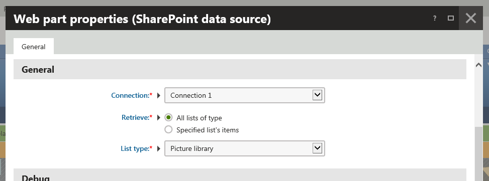

Configuring SharePoint integration web part
Besides specifying a connection to the SharePoint server, you need to configure the SharePoint data source web part to be able to browse the contents of a SharePoint site in Kentico.
Adding SharePoint integration web part
Open the Pages application.
Select a page in the content tree.
You are selecting a page where the system will display the requested SharePoint data.
Switch to the Design tab.
Add the SharePoint data source web part to the selected web part zone.
Configure the SharePoint data source web part.
Configuring SharePoint integration web part
Specify the SharePoint integration connection.
Connection
Specify how the system retrieves the SharePoint data.
Retrieve - indicates whether the system downloads all lists of the selected type (the List type property), or only items from a specified list (the List name property) of the selected type.
Specify the type of SharePoint data.
List type - indicates whether the system downloads from the SharePoint server custom lists, picture libraries, or document libraries.

Based on the selection of the data retrieval mode (the Retrieve property), the system offers other web part properties.
Specify other web part properties based on the selection of the data retrieval mode.
(Optional) Select the Show debugging information property available in the Debug section to display information suitable for debugging.
If selected, the system displays the SharePoint data in a table. The system informs you whether the data is retrieved from the SharePoint server, or from the system cache.
Debugging allows you to look for fields that contain valuable information, and are suitable for display purposes.
Click Save & Close.
You have configured the SharePoint integration web part. Because this web part serves as a data source for the SharePoint data, to display the data, you now need to add a content displaying web part to the same page.
How it works - API
The system uses the SharePoint data source web part to retrieve a data source object (DataSet), which contains a table with the requested SharePoint data. Another web part that uses the SharePoint web part as its data source, for example the Basic repeater web part, then displays the SharePoint data on the page through a selected transformation.
Based on configuration of the SharePoint data source web part, the system loads the data using the corresponding SharePoint integration service.
SharePoint integration API uses the CMS.SharePoint namespace.
The system contains a factory class for each supported SharePoint version, implementing the ISharePointServiceFactory interface.
The system gets the factory object corresponding to the target SharePoint version using the SharePointServiceFactoryProvider.Current.GetSharePointServiceFactory method.
To create an instance of the required SharePoint service, the system calls the GetImplementationFor<ISharePointService> method of this factory object.